📑 Dans cette page (8 sections)
🔐 Connexion Discord
💡 Astuce
Avant tout : regarde les logs (terminal en local, onglet Logs sur Render). Le message exact indique presque toujours la cause.
%%{init: {"theme":"base","themeVariables":{"primaryColor":"#0f2130","primaryTextColor":"#e6eef5","primaryBorderColor":"#5fd0ff","lineColor":"#3d89ab","secondaryColor":"#1a0d14","tertiaryColor":"#0b1824","edgeLabelBackground":"#0f2130","fontFamily":"ui-monospace, Menlo, Consolas, monospace","noteBkgColor":"#1a0d14","noteTextColor":"#ffb4bb","actorBkg":"#0f2130","actorBorder":"#5fd0ff","actorTextColor":"#e6eef5","signalColor":"#3d89ab","signalTextColor":"#3d89ab","labelBoxBkgColor":"#0f2130","labelTextColor":"#e6eef5","loopTextColor":"#3d89ab"}}}%%
flowchart TD
S(["🩺 La connexion échoue"]) --> Q{"Quel symptôme ?"}
Q -->|"redirect_uri invalide"| A1["📍 Redirect Discord différent de DISCORD_REDIRECT_URI"]
Q -->|"échec + 401 dans les logs"| A2["🔑 Client ID ou Secret faux ou vide"]
Q -->|"État OAuth invalide"| A3["🍪 Mauvaise adresse ou cookie perdu"]
Q -->|"Accès non autorisé"| A4["🪪 ID absent de ADMIN_DISCORD_IDS"]
class A1,A2,A3,A4 cloud
classDef cloud fill:#0f2130,stroke:#5fd0ff,color:#e6eef5
classDef ok fill:#0c241b,stroke:#5dffb0,color:#e6eef5
classDef bad fill:#241219,stroke:#ff4d5e,color:#ffb4bb
| Symptôme | Cause | Solution |
|---|---|---|
Invalid OAuth2 redirect_uri |
Redirect Discord ≠ DISCORD_REDIRECT_URI |
Identiques au caractère près (http/https, / final, localhost/127.0.0.1) |
Logs : 401 … /oauth2/token, invalid_client |
Client ID/Secret faux ou vide | Reset Secret ; vérifier le nom DISCORD_CLIENT_SECRET |
400 État OAuth invalide |
Cookie de session perdu | Utiliser l'adresse exacte du redirect ; recommencer depuis « Accès éditeur » |
| « Accès non autorisé » | ID absent de la liste | Corriger ADMIN_DISCORD_IDS (virgules, sans espaces ni guillemets) |
| « Connexion Discord non configurée » | DISCORD_CLIENT_ID vide |
Renseigner la variable, redémarrer |
| Déconnecté tout le temps | FLASK_SECRET_KEY changeante ou absente en local |
Définir une clé fixe |
💻 Démarrage local
| Symptôme | Solution |
|---|---|
'SECTIONS' is undefined |
Importer les macros avec contexte : {% from "_macros.html" import card with context %} (déjà corrigé dans la dernière version) |
.env sans effet |
Fichier mal nommé (.env.txt) ou serveur non relancé |
ModuleNotFoundError |
pip install -r requirements.txt dans l'environnement virtuel activé |
| PowerShell bloque l'activation | Set-ExecutionPolicy -Scope CurrentUser RemoteSigned |
| Port déjà utilisé | Ferme l'autre instance ou définis PORT=5001 (et adapte le redirect Discord) |
☁️ Render
| Symptôme | Cause / solution |
|---|---|
| Build échoue : module introuvable | Dépendance absente de requirements.txt |
RuntimeError: FLASK_SECRET_KEY doit être défini |
Ajouter la variable dans Environment |
| « No open ports detected » | La commande de démarrage doit contenir --bind 0.0.0.0:$PORT |
/healthz ne répond pas |
Voir les Logs ; vérifier DATABASE_URL |
| Site très lent au premier accès | Mise en veille de l'offre gratuite |
| Retour sur le site déconnecté après Discord | DISCORD_REDIRECT_URI/SITE_URL en http ou avec un autre domaine |
| Articles disparus après un déploiement | Base SQLite locale utilisée : définir DATABASE_URL |
| Images disparues après un déploiement | Disque local temporaire : utiliser R2/S3 ou un disque |
🍪 Base de données
Voir le tableau de la page 6 : adresse en Session pooler, mot de passe encodé, projet Supabase en pause, trop de connexions.
Erreur Can't load plugin: sqlalchemy.dialects:postgresql.psycopg → psycopg[binary] manquant dans requirements.txt.
🎞️ Médias
| Symptôme | Solution |
|---|---|
| « format non pris en charge » | Seuls PNG, JPG, GIF, WEBP, MP4, WEBM ; le contenu réel est vérifié |
| « fichier trop volumineux » / erreur 413 | Réduire le fichier ou augmenter MAX_*_MB (attention aux limites de l'hébergeur) |
| Vidéo noire / non lisible | Ré-encoder en H.264 + AAC |
| Image externe absente | Elle doit être en https |
| Média non affiché en S3/R2 | Bucket non public, S3_PUBLIC_URL faux, ou adresse avec / final |
| Shortcode affiché en texte | Il doit être seul sur sa ligne et commencer par [[media:, [[gallery: ou [[youtube: |
🖥️ Affichage
| Symptôme | Solution |
|---|---|
| Un script ou widget ajouté ne marche pas | La CSP bloque les scripts en ligne et les domaines non autorisés (voir Personnalisation) |
| RSS/sitemap avec la mauvaise adresse | Définir SITE_URL |
| Animations absentes | Réglage « réduire les animations » du système, ou JavaScript bloqué |
| Texte qui ne s'habille pas autour du média | Utiliser align=left ou right ; sur mobile le média passe en pleine largeur |
🌿 Git
| Symptôme | Solution |
|---|---|
push refusé (non-fast-forward) |
git pull --rebase puis git push |
.env apparaît dans git status |
Vérifier .gitignore ; si déjà commité : git rm --cached .env, puis reset des secrets |
| Demande de mot de passe refusée | Utiliser un Personal Access Token |
❓ Questions fréquentes
Faut-il un bot Discord ? Non, seulement une application OAuth2.
Plusieurs éditeurs ? Oui : ajoute leurs ID, séparés par des virgules.
Les articles de démonstration ? Créés au premier démarrage d'une base vide ; supprime-les depuis le Studio.
Puis-je héberger ailleurs que Render ? Oui : tout hébergeur Python (commande gunicorn app:app, variables d'environnement identiques).
Pourquoi pas GitHub Pages ? Il ne sert que des fichiers statiques ; le site a besoin d'un serveur Python.


◀ 🎨 Personnalisation · 🔧 Maintenance ▶

⛨ SCP Foundation — projet de fan non officiel · contenus SCP sous licence CC BY-SA 3.0 lorsque applicable · ⬆ retour en haut